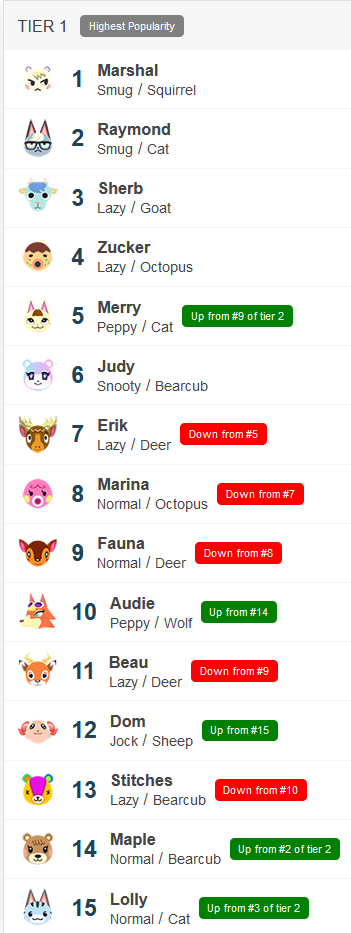
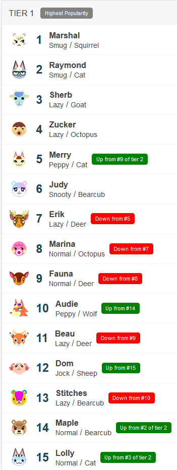

.webp) Volver
Volver
Popularidad vecinos
Según la última consulta al sitio (28/12/2020) Villager Popularity Tier List parece no haber relación :(

Volver
Según la última consulta al sitio (28/12/2020) Villager Popularity Tier List parece no haber relación :(
